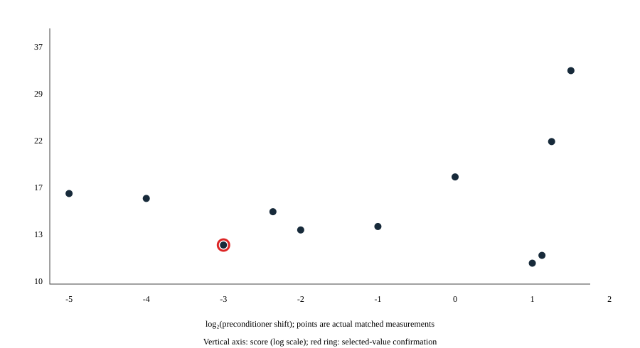
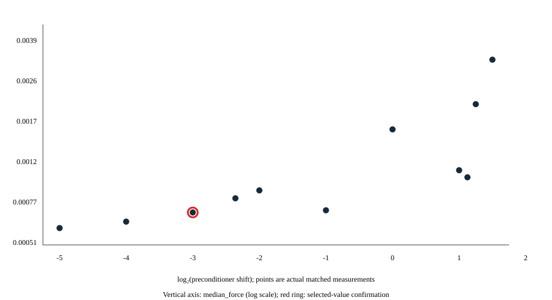
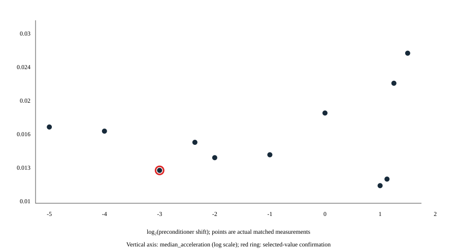

complete_pending_review · 580 /580 charged attempts; physical-time steps:0.
The unchanged129³ field occupies a30.72 box with0.24 spacing. Only the numerical Sobolev shift is varied in consistently restarted cases. The exact-memory control is separate. These are preparations, not motion simulations or a proof of stability.
The response uses medians over accepted updates21–30. Lower joint score is better; score1 corresponds to the force and acceleration thresholds. Topology, representation and boundary gates are also checked at every update. A favorable fit never grants admission.
Matched samples CSV · Every measured update CSV · Full record · Localized and spectral audit · Protocol



| Case | Shift | Joint score | Final readiness |
|---|---|---|---|
| scan-00 | 0.03125 | 16.77669016070065 | False |
| scan-01 | 0.0625 | 16.329597330917093 | False |
| scan-02 | 0.125 | 12.633676988579149 | False |
| scan-baseline | 0.25 | 13.728647770575732 | False |
| scan-04 | 0.5 | 13.991351963373717 | False |
| scan-05 | 1 | 18.382582707873738 | False |
| scan-06 | 2 | 11.433802002250573 | False |
| adaptive-00 | 2.828427 | 33.00469018738419 | False |
| adaptive-01 | 0.1948342 | 15.178143972635608 | False |
| adaptive-02 | 2.378414 | 22.332067890519603 | False |
| adaptive-03 | 2.181015 | 11.934985732898394 | False |
{
"selection": {
"log2_shift": -3,
"shift": 0.125,
"mode": "best_measured_value_without_validated_optimum",
"source_case": "scan-02",
"fits": {
"score": {
"status": "measured_curve_fit",
"parameter_coordinate": "log2(Sobolev_shift)",
"models": [
{
"model": "linear",
"coefficients": [
6.033413838450462,
16.884203337064413
],
"x_origin": -1.134971,
"x_scale": 6.5,
"leave_one_out_rmse": 7.069253063278791,
"range_normalized_rmse": 0.32772192793391003,
"skill_vs_constant": -0.1781374921291723,
"validated": false
},
{
"model": "quadratic",
"coefficients": [
26.902391191939127,
8.84331503165261,
13.846564853789324
],
"x_origin": -1.134971,
"x_scale": 6.5,
"leave_one_out_rmse": 6.926817805811476,
"range_normalized_rmse": 0.32111880356346895,
"skill_vs_constant": -0.1311402301250677,
"validated": false,
"turn_log2_shift": -2.203306288406731,
"turn_is_minimum": true,
"leave_one_out_turns": [
-1.7998162441002339,
-2.288941493317303,
-2.192338520716513,
-2.1885027386748495,
-2.2056210343429727,
-2.1151551399240183,
-2.411371226069922,
-1.6987354677907436,
-2.1770500674958386,
-2.163879658112516,
-2.3821331805275197
],
"leave_one_out_turn_spread": 0.7126357582791782
},
{
"model": "exponential",
"coefficients": [
0.2302278986466978,
2.7779310402722057
],
"x_origin": -1.134971,
"x_scale": 6.5,
"leave_one_out_rmse": 6.874834536404587,
"range_normalized_rmse": 0.318708922757415,
"skill_vs_constant": -0.11422633656328895,
"validated": false
}
],
"points": 11,
"sampled_range": [
-5.0,
1.5
],
"constant_leave_one_out_rmse": 6.512916950051006,
"measured_response_range": 21.57088818513362,
"trajectory_variation_floor": 0.1871334172159118,
"admission_inferred": false
},
"median_force": {
"status": "measured_curve_fit",
"parameter_coordinate": "log2(Sobolev_shift)",
"models": [
{
"model": "linear",
"coefficients": [
0.0016092493201170304,
0.0012325103445297565
],
"x_origin": -1.134971,
"x_scale": 6.5,
"leave_one_out_rmse": 0.0007241615309065212,
"range_normalized_rmse": 0.2690056752540966,
"skill_vs_constant": 0.3019372995876518,
"validated": false
},
{
"model": "quadratic",
"coefficients": [
0.0026713255130397834,
0.001888263950934343,
0.000930882094391323
],
"x_origin": -1.134971,
"x_scale": 6.5,
"leave_one_out_rmse": 0.0007220963527822907,
"range_normalized_rmse": 0.26823851956835726,
"skill_vs_constant": 0.3059131202607659,
"validated": false,
"turn_log2_shift": -3.4322791380686155,
"turn_is_minimum": true,
"leave_one_out_turns": [
-2.6498323055736654,
-3.463200996846372,
-3.405720020106065,
-3.285166458261674,
-3.7728665699451254,
-3.2070297845737326,
-3.500699873850868,
-5.368337900345373,
-3.3226384268946063,
-3.4555382134772676,
-3.4120174745608063
],
"leave_one_out_turn_spread": 2.7185055947717074
},
{
"model": "exponential",
"coefficients": [
1.2130708612909589,
-6.85058345664972
],
"x_origin": -1.134971,
"x_scale": 6.5,
"leave_one_out_rmse": 0.0006812146580380582,
"range_normalized_rmse": 0.2530521178736451,
"skill_vs_constant": 0.3822802303390318,
"validated": false
}
],
"points": 11,
"sampled_range": [
-5.0,
1.5
],
"constant_leave_one_out_rmse": 0.000866738791013544,
"measured_response_range": 0.0026919935061685777,
"trajectory_variation_floor": 1e-12,
"admission_inferred": false
},
"median_acceleration": {
"status": "measured_curve_fit",
"parameter_coordinate": "log2(Sobolev_shift)",
"models": [
{
"model": "linear",
"coefficients": [
0.004132719206851555,
0.016354789768863082
],
"x_origin": -1.134971,
"x_scale": 6.5,
"leave_one_out_rmse": 0.005487365167582887,
"range_normalized_rmse": 0.34846301271987695,
"skill_vs_constant": -0.19696835405241475,
"validated": false
},
{
"model": "quadratic",
"coefficients": [
0.020810440774974372,
0.006306328309011385,
0.014005013672717377
],
"x_origin": -1.134971,
"x_scale": 6.5,
"leave_one_out_rmse": 0.005261644006936447,
"range_normalized_rmse": 0.3341290886467808,
"skill_vs_constant": -0.10051981524056242,
"validated": false,
"turn_log2_shift": -2.119840432892261,
"turn_is_minimum": true,
"leave_one_out_turns": [
-1.7923778576754343,
-2.2197289655272687,
-2.0944813388916677,
-2.1145592874273498,
-2.128039804980121,
-1.9943085144209236,
-2.3529909230270762,
-1.6987354677907403,
-2.1011482393879284,
-1.9958982464740251,
-2.322248182656147
],
"leave_one_out_turn_spread": 0.654255455236336
},
{
"model": "exponential",
"coefficients": [
0.16686880477922347,
-4.147472083558197
],
"x_origin": -1.134971,
"x_scale": 6.5,
"leave_one_out_rmse": 0.005419441015190519,
"range_normalized_rmse": 0.3441496393510121,
"skill_vs_constant": -0.16751893258240913,
"validated": false
}
],
"points": 11,
"sampled_range": [
-5.0,
1.5
],
"constant_leave_one_out_rmse": 0.005015595775276233,
"measured_response_range": 0.015747338934918982,
"trajectory_variation_floor": 1e-12,
"admission_inferred": false
}
}
},
"validation": {
"allocated": true,
"trial": {
"recorded_at": {
"utc": "2026-11-22T13:22:09.781500+00:00",
"melbourne": "2026-11-23T00:22:09.781500+11:00"
},
"qualified_for_longer_comparison": true,
"candidate_measured_response": {
"eligible": true,
"reason": "matched_update_response",
"accepted_steps": 30,
"window_steps": [
21,
22,
23,
24,
25,
26,
27,
28,
29,
30
],
"median_force": 0.0007117029013958954,
"median_acceleration": 0.012633676988579149,
"score": 12.633676988579149,
"trajectory_score_mad": 0.7485336688636473,
"scope": "Last10 observations through accepted update30. MAD describes within-trajectory variation, not independent statistical uncertainty."
},
"baseline_matched_response": {
"eligible": true,
"reason": "matched_update_response",
"accepted_steps": 30,
"window_steps": [
21,
22,
23,
24,
25,
26,
27,
28,
29,
30
],
"median_force": 0.0008882578968284427,
"median_acceleration": 0.013728647770575732,
"score": 13.728647770575732,
"trajectory_score_mad": 0.6909837173938413,
"scope": "Last10 observations through accepted update30. MAD describes within-trajectory variation, not independent statistical uncertainty."
},
"actual_readiness": false,
"prediction_grants_admission": false
},
"longer_comparison_allocated": true,
"longer_comparison": {
"matched_accepted_horizon": true,
"baseline_final": {
"recorded_at": {
"utc": "2026-11-22T13:57:48.976748+00:00",
"melbourne": "2026-11-23T00:57:48.976748+11:00"
},
"accepted_step": 120,
"iteration": 545,
"charged_attempt": 120,
"alpha": 0.07804371375790048,
"metrics": {
"energy": 12.330612369970662,
"relative_force_l2": 0.0005080358743111837,
"acceleration_max": 0.011130909127140686,
"acceleration_rms": 7.171222146106029e-05,
"minimum_corner_cone": 0.7969850339693431,
"hopf_integral": -20.719686253901678,
"unit_error": 3.3306690738754696e-16,
"max_neighbour_angle": 0.7322032941202992,
"mean_topological_b": [
1.5523065402699487e-07,
-4.1345192956542736e-07,
-6.308592959988684e-05
],
"scope": "finite-grid Coulomb-gauge integral, not an exact integer certificate",
"tail_fraction": 0.0002636171225295157,
"guard_fraction": 0.0004703509342736766
},
"gates": {
"representation": true,
"strict_stationary": false,
"boundary_admitted": true,
"all_readiness_gates": false
},
"objective_calls": 3,
"optimization_seconds": 0.462095970986411,
"backend_audit": {
"passed": true,
"energy_abs_difference": 3.552713678800501e-15,
"gradient_max_abs_difference": 0.0,
"reference": "independent CPU sf_readmission.static_value_gradient"
},
"step": {
"energy": 12.330612369970659,
"objective_calls": 3,
"accepted_step_max": 0.0004748034354218429
}
},
"candidate_final": {
"recorded_at": {
"utc": "2026-11-22T14:33:29.719041+00:00",
"melbourne": "2026-11-23T01:33:29.719041+11:00"
},
"accepted_step": 120,
"iteration": 545,
"charged_attempt": 120,
"alpha": 0.07804371375790048,
"metrics": {
"energy": 12.330612771813275,
"relative_force_l2": 0.0005759890276075359,
"acceleration_max": 0.011644143160389328,
"acceleration_rms": 7.522443771853653e-05,
"minimum_corner_cone": 0.797010614373659,
"hopf_integral": -20.71970801788426,
"unit_error": 3.3306690738754696e-16,
"max_neighbour_angle": 0.7320173640672369,
"mean_topological_b": [
1.602133391921336e-07,
-4.202103681495477e-07,
-6.308370208319726e-05
],
"scope": "finite-grid Coulomb-gauge integral, not an exact integer certificate",
"tail_fraction": 0.00026363705491737544,
"guard_fraction": 0.00047038613215737775
},
"gates": {
"representation": true,
"strict_stationary": false,
"boundary_admitted": true,
"all_readiness_gates": false
},
"objective_calls": 3,
"optimization_seconds": 0.49156745709478855,
"backend_audit": {
"passed": true,
"energy_abs_difference": 0.0,
"gradient_max_abs_difference": 0.0,
"reference": "independent CPU sf_readmission.static_value_gradient"
},
"step": {
"energy": 12.330612771813275,
"objective_calls": 3,
"accepted_step_max": 0.000586143411190497
}
},
"baseline_final_window": {
"eligible": true,
"reason": "matched_update_response",
"accepted_steps": 120,
"window_steps": [
111,
112,
113,
114,
115,
116,
117,
118,
119,
120
],
"median_force": 0.0003993575835222822,
"median_acceleration": 0.01167777668306599,
"score": 11.67777668306599,
"trajectory_score_mad": 0.17799642255708914,
"scope": "Last10 observations through accepted update120. MAD describes within-trajectory variation, not independent statistical uncertainty."
},
"candidate_final_window": {
"eligible": true,
"reason": "matched_update_response",
"accepted_steps": 120,
"window_steps": [
111,
112,
113,
114,
115,
116,
117,
118,
119,
120
],
"median_force": 0.0004913895437787675,
"median_acceleration": 0.011705899434822708,
"score": 11.705899434822708,
"trajectory_score_mad": 0.19291511389723315,
"scope": "Last10 observations through accepted update120. MAD describes within-trajectory variation, not independent statistical uncertainty."
},
"interpretation": "Compare120 accepted updates only if both reached120. Earlier scientific stops are reported explicitly; do not compare unequal horizons as a matched optimum."
}
}
}Linear, quadratic and exponential response models use log₂(shift). They must outperform a constant predictor under leave-one-out validation. Additional measurements concentrate near turns and unresolved best regions. Extrapolation is bounded. A longer comparison is allocated only after a new measured trial improves the joint response. A measured best setting without fit support is explicitly labelled as such.
All original gates remain fixed. Passing static readiness would still require spatial/domain confirmation and controlled physical-time tests. Positive curvature in a finite tested subspace does not certify global stability.